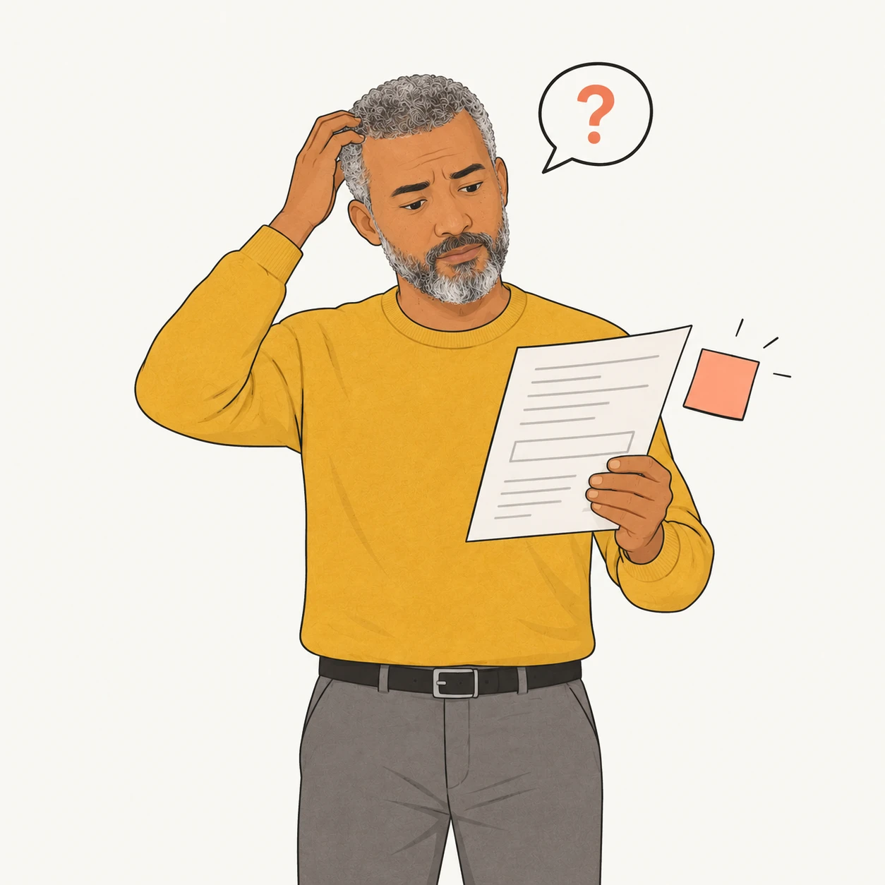
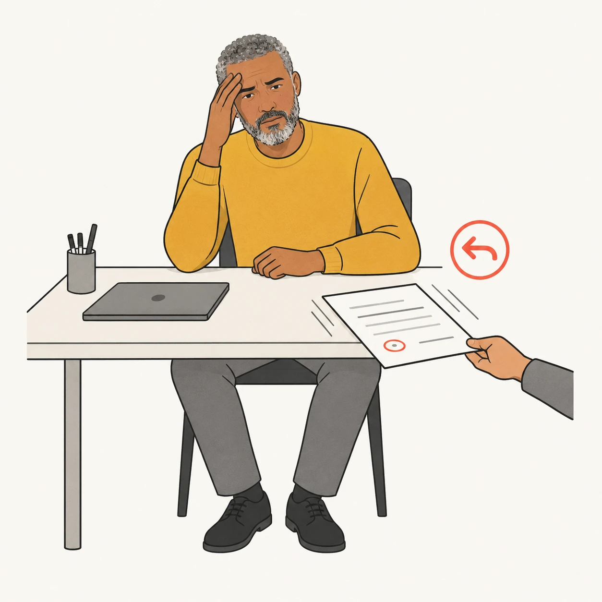
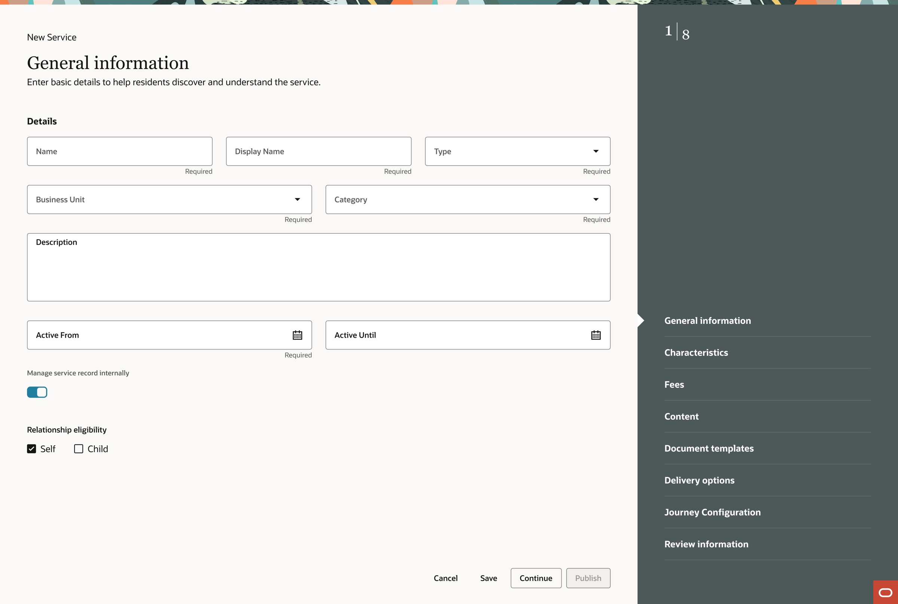
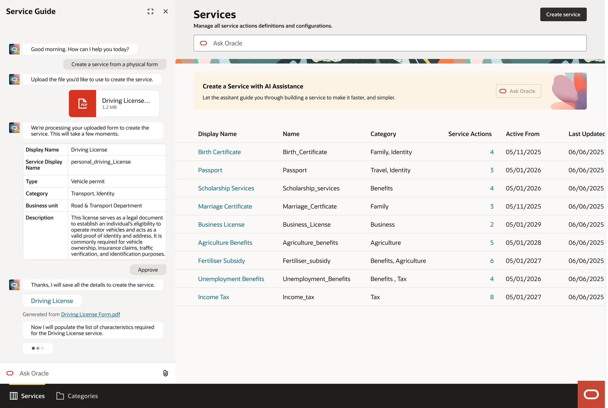
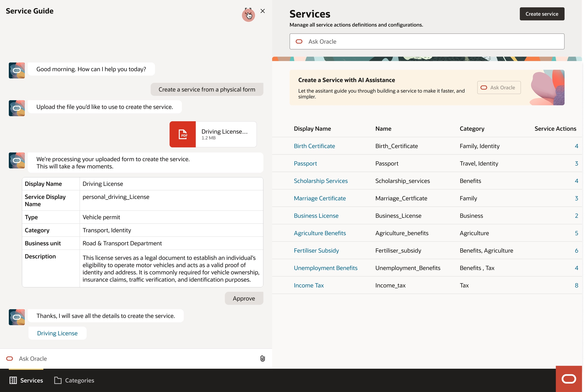
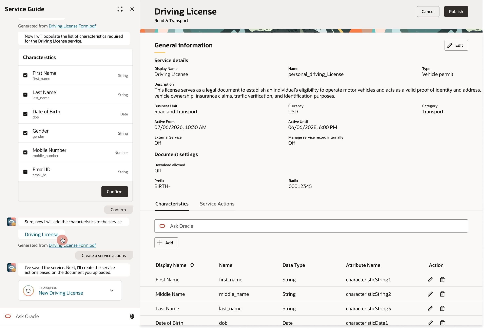
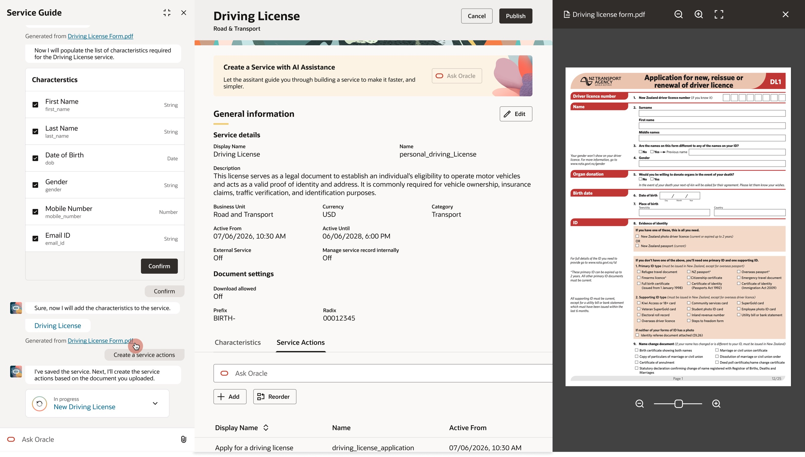

Creating a government service is a complex, multi-step process. Administrators must manually configure everything from service details and fees to eligibility criteria, document requirements, and delivery methods by referring to existing policy documents and resident-facing forms. Gathering, entering, and validating this information, often across multiple departments, makes service creation time-consuming and prone to errors.
To simplify this process, we introduced an AI-powered assistant that extracts and structures information from existing resources, helping administrators create services faster and more accurately while reducing repetitive manual work and cross-department coordination.
Reduced manual data entry and cross-departmental approval cycles, saving approximately 35 hours of manual work per service.
Setting up a government service required administrators to manually enter numerous details, from service information and fees to eligibility criteria, document requirements, and delivery methods. Even when the information was available in existing resources, teams had to transfer it into service configuration fields one by one.
The process was repetitive and time-consuming. Minor errors or missing details could trigger repeated corrections, reviews, and approval cycles across departments, stretching service creation from days to weeks. This meant administrators spent significant time fixing trivial mistakes and coordinating revisions instead of getting services ready for residents.



Two people, two halves of the knowledge
Building a service needs two kinds of knowledge, and they sit with two different people who rarely talk in real time.
Jess, Service Administrator
Government IT department. Builds services for government departments in the Service Designer portal. Knows the editor inside out, but not the policy behind each service. Needs to build quickly without inventing rules. Currently setting up a driving licence service for the Road & Transport Department, so residents can apply for or renew a licence online.
Department head
For example, the head of the Road & Transport Department. Owns the rules: who can apply, what it costs, what counts as proof, and how those rules vary by county or community. Never touches the editor, and today answers questions by email, often days later.
As a Service designer, I need an efficient way to create, manage, and update government services so that I can build accurate, up-to-date services, faster with minimal manual effort.
The person who can build the service doesn't hold the rules, and the person who holds the rules can't build the service. Every gap between them became a week of email. The assistant's questions became the bridge.
Following a service from request to launch
We set out to understand where service creation consumed the most time, why configurations needed repeated revisions, and what could be automated using information the government already had.
What we learned
Data entry was only a fraction of the work.
Administrators spent roughly 20% of the 35-hour process entering fields. Most of the remaining time went into locating information, confirming details, and correcting incomplete configurations.
Existing resources contained reusable information.
Policy documents and existing forms already held much of the information needed to configure a service. The opportunity was to extract and structure that information instead of making administrators enter it again.
Small mistakes created disproportionate rework.
Typos, outdated documents, and incorrect fee values could send configurations back for correction and trigger another round of reviews and approvals.
Extraction alone wasn't enough.
Document-AI tools could help populate fields, but administrators still needed to verify the output, identify missing information, and correct errors before submitting a service for approval.
The opportunity
Reuse existing resources
Extract information from documents the government already maintains, rather than entering the same details manually.
Automate configuration
Convert extracted information into structured service fields, reducing repetitive entry and avoidable errors.
Improve with feedback
Use reviewed outputs and corrections to identify recurring errors and improve future extraction, with appropriate validation and oversight.
How research shaped the design direction
We initially approached AI as a way to reduce manual data entry. Research revealed a bigger opportunity: use information the government already trusts to simplify service creation, without introducing assumptions or creating more work for administrators.
This shifted our approach from automating data entry to automating what we can reliably extract, while keeping people in control of everything else.
Automate with trusted information
The assistant extracts and populates fields using information available in existing source documents. When a value cannot be reliably extracted, the field stays blank or becomes a targeted follow-up question rather than being filled with an assumption.
Make every correction count
As more services are created, administrator inputs, corrections, and feedback can help improve extraction accuracy and reduce repetitive work over time. This creates an opportunity for the system to become more effective with use, while keeping human validation and approval in place.
The create agent flow
The experience, screen by screen
Start from Ask Oracle
The starting point is simple. Clicking Ask Oracle opens the Service Guide, a chat window beside the Services list, where the administrator chooses how to create the service and uploads the form.

Expand the chat for detail
When the assistant returns a lot of information, the chat window expands so the administrator can read and review the extracted details comfortably.

Review and edit the outcome
The outcome arrives as a link in the chat. Opening it switches the contextual panel on the right to the drafted service, which the administrator can edit either through the chat or directly in the panel.

Check against the source file
The source file opens alongside the draft, so the administrator can see where each detail came from and interact with the document while reviewing.

What made the first release, and what waited
With a fixed timeline and a rule that the assistant never decides, scope followed one question: does this help Jess build a correct service faster without hiding a guess?
In version one
- Create a service from a physical form.
- Three field states with source previews.
- Section-by-section approval.
- Gap questions for fees, eligibility and validity, with forwarding to the department.
Parked for the next update
- Create a service from a policy document. Policy text is less structured than a form, so it needs a stricter review before it can be released.
Deferred
- Auto-publishing. Not planned. A person always approves.
- Auto-generated resident-facing descriptions. They needed content design review across departments first.
- Bulk updates when a policy changes. High value, but they needed version history in the service model first.
- Handwritten forms. Scan quality was too uneven to promise reliable reading.
The invisible work of keeping it simple
Some of the hardest design work was absorbing complexity so Jess never has to see it.
One box, two fields.
The paper form has a single "Address" box. The service model needs permanent address and current address as separate fields. The assistant splits it and shows one clear result, not the mapping behind it.
One fee line, several rules.
A notice might list one fee of 8 USD, with a different amount for a renewal or a replacement. One line on paper becomes a fee rule with conditions. The assistant drafts the rule and asks Jess to confirm the conditions.
Rules that change by place.
Fees, documents and eligibility can differ by county or community. The assistant asks which variations apply instead of assuming one rule fits everywhere.
More than one version of the same form.
Departments often have several versions in circulation. The assistant shows which version and date it read, so an outdated form is caught before review rather than after.
Poor scans.
When a page is hard to read, fields drawn from it are marked "Needs you" instead of guessed.

Want to hear more?
Let's connect and create some amazing experiences ✨